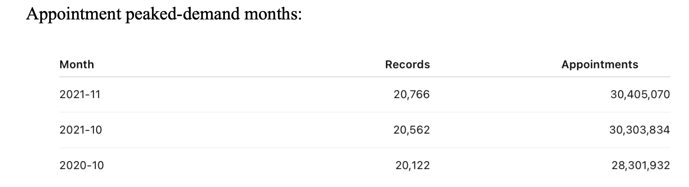
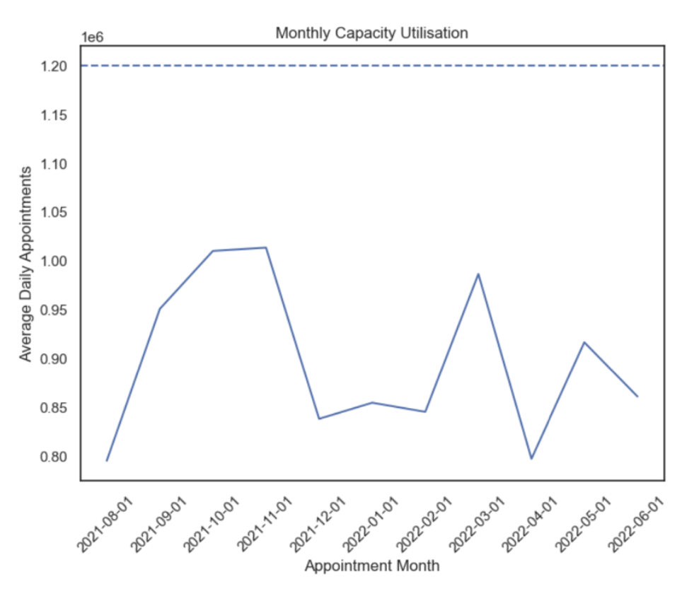
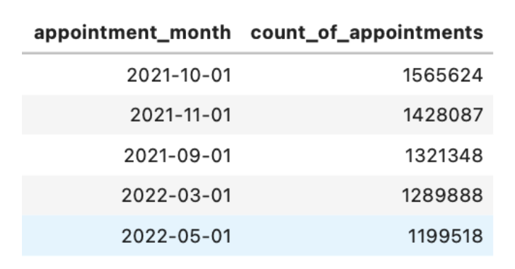

Evaluating healthcare demand, appointment utilisation and operational pressure to understand whether NHS capacity challenges require more infrastructure — or better use of existing resources.
Healthcare demand is high and infrastructure expansion is costly. The analysis therefore asked whether existing resources could be used more effectively before additional capacity is added.
Appointment demand, geographic variation, missed appointments, service settings and capacity utilisation were analysed to identify where operational pressure was concentrated and where efficiency improvements could support service planning.
The objective was not simply to describe appointment volumes, but to translate them into recommendations for capacity planning, workforce allocation and service management.
Where should NHS England expand capacity — and where could better scheduling, resource allocation and appointment utilisation reduce pressure first?
Loaded and inspected NHS datasets, checked structures, data types, missing values and known metadata limitations.
Standardised dates and categories and prepared appointment data for time-series, geographic and utilisation analysis.
Aggregated appointments across time, service settings, appointment status, geography and delivery mode.
Connected descriptive patterns to capacity planning, missed-demand recovery and resource-allocation decisions.
Appointment activity was not constant throughout the period. October and November emerged as particularly high-demand months, with another rise visible around March.

Monthly appointment analysis showing recurring seasonal demand peaks across NHS service settings.
Predictable seasonal variation supports proactive workforce and resource planning rather than applying the same operating model throughout the year.
General Practice accounted for the largest share of appointment activity, making primary care a central pressure point in the system.
This means resource-planning decisions should not treat all NHS service settings equally. Capacity interventions need to reflect where patient activity is actually concentrated.
Target interventions at the highest-volume service settings rather than spreading capacity investment evenly across the system.
High-demand Integrated Care Board areas were concentrated in major population centres. North West London recorded approximately 6.98 million appointments between January and June 2022, placing it among the highest-volume areas.
North East London and other major urban regions also showed high activity, demonstrating that national averages can hide significant local pressure.
Resource allocation should be geographically targeted, with higher-volume ICBs receiving closer capacity monitoring and more flexible support.

Monthly capacity utilisation remained high but generally below the NHS planning guideline, indicating limited — rather than absent — spare capacity.
Appointment activity was extremely high, but overall capacity utilisation generally remained below the planning guideline used in the analysis. Spare capacity was limited rather than completely absent.
System-wide infrastructure expansion should not be the automatic response. More value may first come from targeted resource allocation, flexible staffing, scheduling improvements and preserving a strategic capacity buffer.
The analysis supported maintaining approximately a 15% operational spare-capacity margin where possible, allowing the system to absorb seasonal variation and unexpected demand without routinely operating at maximum capacity.

Monthly missed-appointment analysis highlighting substantial unused scheduled capacity during high-demand periods.
Approximately 1.57 million appointments were recorded as missed, representing capacity that had been scheduled but was not used.
High non-attendance continued during another peak-demand month, making appointment management an important operational lever.
In a system managing tens of millions of appointments each month, reducing even part of the non-attendance rate can release usable capacity without building new facilities.
Strengthen appointment reminders, make cancellation and rescheduling easier, investigate the causes of repeated non-attendance and improve patient self-service so unused slots can return to the system sooner.
The analysis did not suggest replacing face-to-face care. Instead, it identified selective remote delivery as an additional capacity-management option.
Face-to-face appointments remained the principal consultation mode. Remote consultations can nevertheless support appropriate routine follow-ups and lower-complexity interactions where clinical requirements allow.
Channel choice should increase flexibility — not become a one-size-fits-all replacement for in-person care.
Appointment categories and system-recording practices can vary, meaning administrative classifications should not automatically be interpreted as exact measures of clinical activity.
The available datasets covered different periods and therefore required care when comparing trends or interpreting partial-year activity.
Unusual appointment-duration values and metadata inconsistencies were treated cautiously rather than being used uncritically in operational conclusions.
Twitter/X data was explored as an additional source, but low engagement, hashtag-selection bias, bots and representativeness concerns made it unsuitable as a primary operational planning dataset.
Internal NHS appointment datasets were prioritised for operational conclusions rather than forcing a weak external data source into the decision-making process.
Use recurring monthly demand patterns to anticipate pressure and adjust workforce and operational resources before peak periods arrive.
Focus capacity monitoring and resource allocation on high-volume ICBs rather than applying uniform national interventions.
Maintain an appropriate spare-capacity margin so the system can respond to demand surges without depending on permanent over-utilisation.
Strengthen reminders, cancellation and rescheduling processes and investigate the underlying causes of non-attendance.
Make it easier for patients to manage bookings so cancelled slots can return to the available appointment pool more quickly.
Increase flexibility for routine follow-up and suitable lower-complexity appointments while preserving face-to-face access where clinically appropriate.
Base capacity decisions primarily on validated NHS datasets and use social-media evidence only as supplementary context.
The project identified when demand peaks, where appointment volumes are highest and where unused scheduled capacity can be recovered.
This supports more targeted decisions around workforce planning, capacity buffers, appointment management and local resource allocation.
The result is a more nuanced decision framework: expand capacity where evidence supports it, but improve utilisation first where operational inefficiency is contributing to pressure.